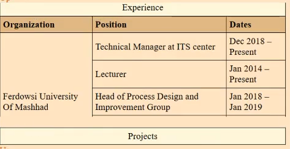
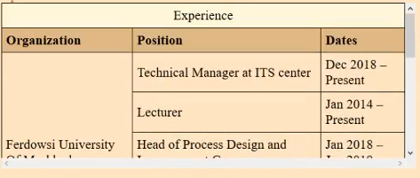

خانه/ آموزش CSS/ ویژگی های overflow، clear و float
آموزش CSS
ویژگی های overflow، clear و float

امید میلانی فرد - 2018-11-28 - آخرین به روز رسانی: 24-06-2021
overflow
سرریز هنگامی اتفاق میافتد که content از container فضای بیشتری اشغال کند و container نتواند تمام آن را شامل شود
معمولا سرریز هنگامی اتفاق میافتد که ما برای container های خود، عرض یا ارتفاع ثابت کردیم.
به طور مثال جدول زیر یک ارتفاع ثابت 200 پیکسل دارد اما محتوای آن ارتفاع بیشتری را طلب میکند و مطالب روی هم ریخته میشوند.
برای اینکه سرریز را مدیریت کنیم از ویژگی overflow در css استفاده میکنیم.
به طور مثال اگر مقدار آن را برابر با hidden قرار دهیم، محتوای اضافه تر از container نمایش داده نمیشود. به شکل زیر:
اما خب طبیعتا این چیزی نیست که ما میخواهیم و نمیتوانیم تمام مطالب را ببینیم. برای اینکار میتوانیم از مقدار scroll استفاده کنیم. این مقدار باعث میشود که مرورگر خود به خود برای ما قابلیت scroll کردن را فراهم کند و بین مطالب جا به جا شویم به نحوی که از چهارچوب container خارج نشویم. به شکل زیر:
مشکلی که روش بالا دارد این است که حتی اگر محتوای ما به اندازۀ container باشد باز هم نوار scroll به ما نمایش داده میشود. برای اینکه فقط در صورت نیاز این نوار نمایش داده شود میتوانیم از مقدار auto برای overflow استفاده کنیم.
floating
این ویژگی برای تعیین شناور بودن یک المنت در صفحه است. با استفاده از این ویژگی ما میتوانیم مکان شیء و فرمت آن را نشان دهیم
مقادیری که برای این ویژگی میتوان ست کرد، left و right هستند و وقتی این مقادیر ست شود، آنگاه جای قبلی این المنت ها خالی میشود و بقیه المنت ها میتوانند در آن جا قرار بگیرند.
به طور مثال صفحه ای با مشخصات زیر را در نظر بگیرید:
اکنون اگر ما به المنت image یا همان عکس مقدار float: left را بدهیم، خروجی ما به شکل زیر خواهد شد:

clear
به وسیلۀ این ویژگی ما میتوانیم مشخص کنیم که عنصر از سمت چپ یا از سمت راست اجازۀ شناوری هیچ دستور دیگه ای را نداشته باشد
برای دیدن کارکرد دستور clear به این لینک مراجعه کنید
به سوالات زیر پاسخ دهید
برای اینکه محتوا در صورت زیاد بودن از قالب خود بیرون نزند چگونه باید جای خالی را پر کنیم
< div style={overflow: .....}>< /div>